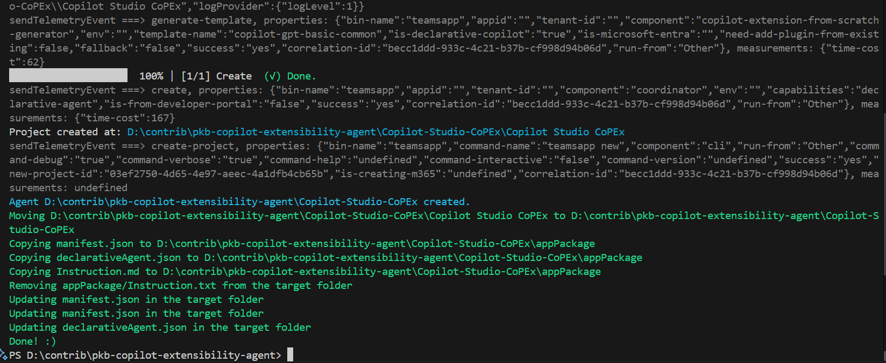

Create and apply template to Teams Toolkit Declarative Agent
Summary
When generating a set of templates for a Teams Toolkit Declarative Agent, you may want to apply the template to overlay the default Declarative agent reducing the need to repeat the same changes each time you develop your agent. This starter script will help you do that, as a principle. In theory, you can use a set of scripts to generate many agents with Teams Toolkit CLI.

Prerequisites
This script requires the following:
- Teams Toolkit CLI installed
Install the Teams Toolkit CLI using the following command:
- npm install -g @microsoft/teamsapp-cli
- Run to test: teamsapp -h
Folder Structure
- Base Folder
- Copilot-Extensibility-Template
- color.png
- manifest.json
- declarativeAgent.json
- Instruction.md
- outline.png
- Copilot-Studio-Agent (Just create the folder, the script will populate the contents + the template)
- appPackage
- manifest.json
- declarativeAgent.json
- Instruction.md ...
- appPackage
- Other Agent 1
- Other Agent 2
- Other Agent 3
- Other Agent 4
- Copilot-Extensibility-Template
- Invoke-CoolScript.ps1
# Name the PowerShell Script Set-TemplateOverlay.ps1
[CmdletBinding()]
param (
$targetFolderName = "Copilot-Studio-Agent",
$appName = "Copilot Studio Agent",
$templateFolderAgent = "Copilot-Extensibility-Template",
$appShortName = "Copilot-Studio-"
)
begin {
$targetFolder = Join-Path -Path "$(Get-Location)" -ChildPath "$($targetFolderName)"
$srcTemplateFolder = Join-Path -Path "$(Get-Location)" -ChildPath "$($templateFolderAgent)"
# ------------------------------------------------------------------------------
# Introduction
# ------------------------------------------------------------------------------
Write-Host "*** This script will generate out the agent, overlay the template and replace the values ***" -ForegroundColor Green
# ------------------------------------------------------------------------------
}
process {
# ------------------------------------------------------------------------------
# Create the agent
# ------------------------------------------------------------------------------
# Test if the target folder contains teamsapp.yml file
$teamsAppFile = "teamsapp.yml"
$teamsAppFilePath = Join-Path -Path $targetFolder -ChildPath $teamsAppFile
if (Test-Path -Path $teamsAppFilePath) {
Write-Host "File $teamsAppFile already exists in the target folder." -ForegroundColor Red
}else{
Write-Host "Creating the target agent $targetFolder" -ForegroundColor Green
teamsapp new --capability "declarative-agent" --app-name $appName -folder $targetFolder --interactive false --debug --verbose --with-plugin no
Write-Host "Agent $targetFolder created." -ForegroundColor Cyan
# Move the agent to the target folder
$srcFolder = "$(Get-Location)\$($targetFolderName)\$($appName)"
$destFolder = "$(Get-Location)\$($targetFolderName)"
if (Test-Path -Path $srcFolder) {
Write-Host "Moving $srcFolder to $destFolder" -ForegroundColor Green
Move-Item -Path "$($srcFolder)\*" -Destination $destFolder -Force
Remove-Item -Path $srcFolder -Recurse -Force
} else {
Write-Host "Source folder $srcFolder not found." -ForegroundColor Red
}
}
# ------------------------------------------------------------------------------
# Copy key template files
# ------------------------------------------------------------------------------
$filesToCopy = @(
"manifest.json",
"declarativeAgent.json",
"Instruction.md"
)
$targetAppFolder = Join-Path -Path $targetFolder -ChildPath "appPackage"
# Copy the files to the output location
foreach ($file in $filesToCopy) {
$srcFilePath = Join-Path -Path $srcTemplateFolder -ChildPath $file
if (Test-Path -Path $srcFilePath) {
Write-Host "Copying $file to $targetAppFolder" -ForegroundColor Green
Copy-Item -Path $srcFilePath -Destination $targetAppFolder -Force
} else {
Write-Host "File $file not found in the template package." -ForegroundColor Red
}
}
$filesToRemoveTarget = @(
"appPackage/Instruction.txt"
)
# Remove the files from the target folder
foreach ($file in $filesToRemoveTarget) {
$srcFilePath = Join-Path -Path $targetFolder -ChildPath $file
if (Test-Path -Path $srcFilePath) {
Write-Host "Removing $file from the target folder" -ForegroundColor Green
Remove-Item -Path $srcFilePath -Force
} else {
Write-Host "File $file not found in the target folder." -ForegroundColor Red
}
}
# ------------------------------------------------------------------------------
# Update Template Values in the target folder
# ------------------------------------------------------------------------------
$valuesToReplace = @(
@{ "file" = "manifest.json"; "oldValue" = "{{TMP_APP_NAME}}"; "newValue" = $appName }
@{ "file" = "manifest.json"; "oldValue" = "{{TMP_APP_SHORT_NAME}}"; "newValue" = $appShortName }
@{ "file" = "declarativeAgent.json"; "oldValue" = "{{TMP_APP_NAME}}"; "newValue" = $appName }
)
$targetAppFolder = Join-Path -Path $targetFolder -ChildPath "appPackage"
# Loop the files in the target location, read the content, and replace the values, update the file
foreach ($fileToUpdate in $valuesToReplace) {
$srcFilePath = Join-Path -Path $targetAppFolder -ChildPath $fileToUpdate.file
if (Test-Path -Path $srcFilePath) {
Write-Host "Updating $($fileToUpdate.file) in the target folder" -ForegroundColor Green
(Get-Content -Path $srcFilePath) -replace $fileToUpdate.oldValue, $fileToUpdate.newValue | Set-Content -Path $srcFilePath
} else {
Write-Host "File $($fileToUpdate.file) not found in the target folder." -ForegroundColor Red
}
}
}
end{
Write-Host "Done! :)" -ForegroundColor Green
}
Check out the Microsoft Teams Toolkit CLI to learn more at: https://learn.microsoft.com/en-us/microsoftteams/platform/toolkit/teams-toolkit-cli?pivots=version-three
Template Files
{
"$schema": "https://developer.microsoft.com/json-schemas/copilot/declarative-agent/v1.3/schema.json",
"version": "v1.3",
"name": "{{TMP_APP_NAME}}",
"description": "Declarative agent example for learning about Copilot Studio",
"instructions": "$[file('instruction.md')]",
"capabilities": [
{
"name": "WebSearch",
"sites": [
{
"url": "https://learn.microsoft.com/en-us/microsoft-copilot-studio"
}
]
}
]
}
Source Blog Article
Contributors
| Author(s) |
|---|
| Paul Bullock |
Disclaimer
THESE SAMPLES ARE PROVIDED AS IS WITHOUT WARRANTY OF ANY KIND, EITHER EXPRESS OR IMPLIED, INCLUDING ANY IMPLIED WARRANTIES OF FITNESS FOR A PARTICULAR PURPOSE, MERCHANTABILITY, OR NON-INFRINGEMENT.